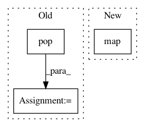

92bba3102bed7256aa22c0ab273139048aa23559,yellowbrick/classifier.py,ClassifierReport,score,#ClassifierReport#Any#Any#,78
Before Change
// TODO: Do a better job of guessing defaults from the model
cr_kwargs = {
"labels": kwargs.pop("labels", None),
"target_names": kwargs.pop("target_names", None),
"sample_weight": kwargs.pop("sample_weight", None),
"digits": kwargs.pop("digits", 2)
}
self.report = classification_report(y_true, y_pred, **cr_kwargs)
def render(self):
After Change
self.keys = ("precision", "recall", "f1")
self.scores = precision_recall_fscore_support(y, y_pred, labels=self.classes)
self.scores = map(lambda s: dict(zip(self.classes, s)), self.scores[0:3])
self.scores = dict(zip(self.keys, self.scores))
self._draw(y, y_pred)
In pattern: SUPERPATTERN
Frequency: 3
Non-data size: 3
Instances
Project Name: DistrictDataLabs/yellowbrick
Commit Name: 92bba3102bed7256aa22c0ab273139048aa23559
Time: 2016-10-01
Author: bilbro@gmail.com
File Name: yellowbrick/classifier.py
Class Name: ClassifierReport
Method Name: score
Project Name: NifTK/NiftyNet
Commit Name: f27fc2c9841b582b7280d00abca832b09954a7fc
Time: 2017-08-08
Author: wenqi.li@ucl.ac.uk
File Name: niftynet/io/image_window.py
Class Name:
Method Name: read_window_sizes
Project Name: has2k1/plotnine
Commit Name: b8f8bbb6e8f5480174c4c49445bc0e7d952f3946
Time: 2014-04-25
Author: eric.chiang.m@gmail.com
File Name: ggplot/geoms/geom_abline.py
Class Name: geom_abline
Method Name: _plot_unit